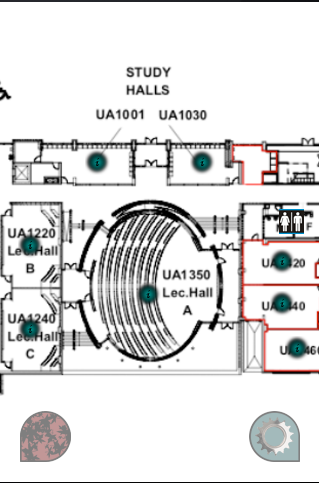

<div style="text-align:center; width:319px; margin-left:auto; margin-right:auto;width:342; height:639; background-image:url('iphone.png'); text-align: center">

<map id="_Image-Maps_2201112201947487" name="Image-Maps_2201112201947487">
<area shape="poly" coords="247,412,279,412,299,435,300,463,283,463,258,457,248,437," href="options-menu.html" alt="" title=""   />
</map>
<br /><br /><br /><br /><br /><br /><br />
<p style='font-family:verdana; text-align: left'>Select the bottom right options menu.</p>
</div>